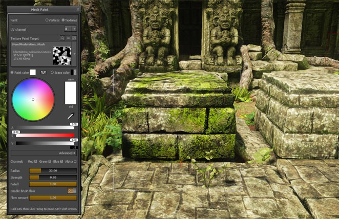
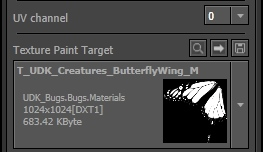
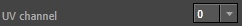
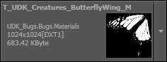
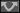
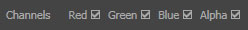
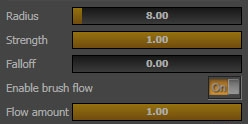

UDN
Search public documentation:
TexturePaintReference
日本語訳
中国翻译
한국어
Interested in the Unreal Engine?
Visit the Unreal Technology site.
Looking for jobs and company info?
Check out the Epic games site.
Questions about support via UDN?
Contact the UDN Staff
中国翻译
한국어
Interested in the Unreal Engine?
Visit the Unreal Technology site.
Looking for jobs and company info?
Check out the Epic games site.
Questions about support via UDN?
Contact the UDN Staff
UE3 Home > Unreal Editor & Tools > Texture Paint Reference
UE3 Home > Level Designer > Texture Paint Reference
UE3 Home > Level Designer > Texture Paint Reference
Texture Paint Reference
Overview

You can paint on a single texture associated with multiple meshes with unique color values, and use that data however you'd like in your materials. You can easily edit multiple meshes at the same time and visualize your paint changes directly in the viewport.
Quick guide
- Activate the Texture Paint Mode then select your mesh actor
- Make sure the material assigned to your mesh makes use of the texture you want to paint
- Select the UV channel you want to use and the texture that you want to paint
- Set your paint color and adjust other brush properties appropriately
- While holding down the Ctrl key, click and drag on your mesh to apply paint!
Texture Paint Mode
Painting on Meshes
Paint Targets
When you switch to Texture Paint mode and select an actor that uses Texture2D objects, you will have the following options available: | Targets | Description |
|---|---|
|  | Contains the UV channels available for your current actor selection. The UV set chosen here will be used to map paint to the texture you have selected in the Texture Paint Target combo box. |
|  | This combo box will contain a list of textures(Texture2D) used by your current actor selection. Use this combo box to select the texture you want to paint on. Any texture flagged as a normalmap will not be in the list of paintable textures. |
| Quick Access | Description |
|---|---|
| Will help you easily find your texture selection in the Content Browser (Ctrl + Shift + T). | |
| As you paint, you are modifying the texture source art. This will finalize your texture asset by doing the appropriate texture compression, MipMap generation, and thumbnail update (Ctrl + Shift + C). Don't worry if you forget to finalize, it happens automatically for each modified texture when you exit the tool. | |
| Will let you save the package that contains the currently selected texture. |
Painting Colors
Texture Paint mode will allow you to paint color data (Red, Green, Blue) directly onto a mesh and that data will be mapped to your target texture using the UV set you select. This mode is useful when your material is configured to combine the texture color data with your pixel shader in some interesting way.| Color Option | Description |
|---|---|
| The color that will be applied while painting (Ctrl + LMB + Drag). A swatch displays a preview of the current color. The color can be set using the Color Picker built-in to the tool. | |
 | The color to use as your "eraser" color while erasing (Ctrl + Shift + LMB + Drag). A swatch displays a preview of the current color. The color can be set using the Color Picker built-in to the tool. |
|  | Swaps the Paint color and Erase color. |
|  | These check boxes set which color/alpha channels should be affected by the paint brush. |
Brush Settings
This section describes the various brush settings. Note that for the options controlled by sliders, you can click and drag to change the value quickly, or you can click and type in a number if needed. | Setting | Description |
|---|---|
| Radius | The radius of the brush in Unreal units. In addition, the brush has a depth-based falloff that's equal to half of this radius. |
| Strength | Sets the amount of paint to apply each time you click or move the mouse cursor while painting is enabled. Also if brush flow is enabled, a percentage (flow amount) of the brush's strength will be applied to the surface. |
| Falloff | Sets how the brush's strength falls off with distance. A falloff value of 1.0 means that the center of the brush is 100% strong and fades linearly towards the radius of the brush. A falloff value of 0.5 means that the brush is 100% strong half way towards the radius, then falls off linearly. A falloff value of 0.0 means the brush is 100% strong over the entire radius. Note that depth-based falloff is always active, regardless of this setting. |
| Enable brush flow | This option configures the brush to apply paint every single render frame, even when you're not moving the cursor. It yields results similar to an airbrush. |
| Flow amount | When Enable brush flow is turned on, this sets the strength of the brush when paint is applied every render frame, as a percentage of the brush's strength. |